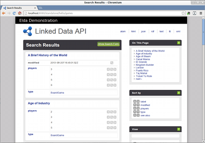

<html>
<head>
<title>Elda -- an implementation of the Linked Data API</title>
<link href="../style.css" type="text/css" rel="stylesheet"></link>
<script src="../util.js"></script>
</head>

<body onload="toc()">

<div class="main">

<div class="heading">
<a href="http://www.epimorphics.com">

</a>
<h1 class="not-toc">Elda 1.2.26</h1>
<h2 class="not-toc">An implementation of the Linked Data API</h2>
</div>

<div id="toc">
<h1 class="not-toc">contents</h1>
</div>

<h1>Introduction</h1>

<p>
This document is an introduction to Elda, an implementation of the
<a href="http://code.google.com/p/linked-data-api/wiki/Specification">Linked Data API (LDA)</a>.
The LDA allows you to have a configurable, REST-style interface to a store containing
<a href="http://www.w3.org/RDF/">RDF</a>
data. This makes it easier for developers used to using common web technologies such as
JavaScript and JSON to access your data, and display it in a web browser.
</p>

<p>
  Elda is a Java implementation of the LDA specification, and was developed by
<a href="http://www.epimorphics.com">Epimorphics Ltd</a>. Elda is
<a href="http://elda.googlecode.com/hg/LICENCE.html">licensed</a> under
an open-source <a href="http://www.apache.org/licenses/LICENSE-2.0">Apache License</a>.
</p>

<h2>A quick introduction to running Elda</h2>
<p>
  Before we go on to explain more of what Elda is doing and how you can customise it,
  let's get an instance of Elda running and see what it can do.
</p>

<p>
  The easiest route to starting Elda is to use the pre-packaged Java <code>.jar</code>
  file that you can <a href="http://code.google.com/p/elda/downloads/list">download</a>
  from the Google project site. You can start the file from the command line.
</p>
<pre>
java -jar elda-standalone-<em>$VERSION</em>.jar
</pre>
<p>
  where <em><code>$VERSION</code></em> denotes the version number of the Elda you downloaded, such as
  1.2.26.
  If your system permits, double-clicking on the file in
  your preferred file browser may also work.
</p>
<p>
  At this point, you may see a large number of log messages as Elda starts, and then
  you should be able to view the starting page in a web browser:
  <a href="http://localhost:8080/standalone/hello/games">http://localhost:8080/standalone/hello/games</a>.
  This should display a page similar to:

  
</p>

<h3>what just happened?</h3>

<p>
  Contained within the standalone Elda version is a small RDF dataset about board games. The
  <a href="http://elda.googlecode.com/hg/elda-standalone/src/main/webapp/specs/hello-world.ttl">
    example configuration
  </a>
  provides an API for viewing the contents of this dataset through simple
  web URLs. <code>http://localhost:8080/standalone/hello/games</code>
  lists the first page of board games that are in the example data: the
  different games appear as entries in the <b>Search Results</b> section on
  the left.
</p>

<p>
  By default, the list is presented in HTML format, which is nice for 
  people to read, but not so good for programs to process. The format 
  names on the top-right of the window are clickable to select a
  different format, <i>eg</i> by clicking the 
  <a href="http://localhost:8080/standalone/hello/games.ttl">ttl</a>
  link, the BoardGame resources will be shown as RDF Turtle.
</p>

<p>
  The right-hand column of the page has links to the individal items
  on the left, links to allow sorting on the different properties
  the items may have, and links for adjusting the view by adding or
  removing properties from it; these are more useful for bigger
  examples with more items and properties to experiment with.
</p>

<h3>how did it happen?</h3>

<p>
  When Elda is presented with a URL, it uses it to select an 
  <i>endpoint</i>. From the details of the URL path 
  (<code>/games</code> in this case) and its query parameters 
  (none in this case), it constructs a <i>SPARQL query</i> which 
  selects one or more <i>items</i> (here, games) from the
  RDF dataset. It then  constructs a <i>view</i> of (some of the) 
  properties of those items, and then <i>renders</i> that view 
  into one of the possible formats, sending that rendering back 
  to whatever sent the query.
</p>

<p>
  This example displays all available properties.
</p>

<p>
  Decisions about which datasets to display, which end-points (<i>ie</i>, URL patterns) display
  which resources, how resources are displayed, and other design choices are all
  encoded in the LDA configuration file. The
  <a href="http://code.google.com/p/linked-data-api/wiki/Specification">LDA specification</a>
  describes in detail
  what goes in a configuration file. The configuration file itself uses RDF to encode
  these configuration choices, and is typically written in the
  <a href="http://en.wikipedia.org/wiki/Turtle_(syntax)">Turtle</a> syntax, as it
  is relatively readable and compact. Elda comes with various pre-built examples which may help
  you to get started with building your own specs. Ultimately, it is the configuration file
  which specifies how Elda URLs are turned into queries against the underlying store, and how
  the results of those queries are presented back to your users.
</p>

<p>
  The <a href="cribsheet.html">cribsheet</a> gives a terse overview of the
  meaning of the LDA query parameters and configuration properties.
</p>

<h2>Summary of LDA capabilities</h2>

<ul>
  <li>
    <i>filters</i>. Query parameters can specify that items must have specified 
    ranges of values for some property in order to be selected. Endpoints can
    have some filters, <i>eg</i> that the item has a particular type, pre-loaded.
  </li>

  <li><i>views</i>.
    Endpoints can specify, and query parameters modify, which properties of the
    selected items are to be displayed.
  </li>
  
  <li><i>formats</i>. 
    The items and their properties can be rendered in different formats, including
    HTML, XML, JSON, RDF/XML, and Turtle.
  </li>

  <li><i>data sources</i>.
    Data can be fetched from any SPARQL endpoint. For convenience in testing,
    Elda also allows data to be fetched from a local file.
  </li>

  <li><i>metadata</i>.
    The rendered response includes metadata such as the SPARQL queries used to
    select items and fetch their properties. 
  </li>
  
  <li><i>text search</i>.
    For suitably-configured SPARQL endpoints, Elda can exploit <i>free text
    queries</i> that can search for text fragments or use AND, OR, and NOT to
    control the search.  
  </li>

  <li><i>velocity templates</i>. 
    You can choose to write a new format for an Elda instance using Velocity
    templates. (This feature is experimental; feedback is welcome.)
  </li>

  <li><i>statistics</i>. 
    Elda can present statistics about the queries that it has received
    either in HTML or (experimentally) using JMX. The statistics include
    the number of queries and the amount of data transferred.
  </li>

  <li><i>configuration display</i>.
    The path <code>/api-config</code> for a running Elda presents all the
    endpoints that are available for it and details of their configuration.
  </li>

</ul>

<h1>Tutorial</h1>

<p>
  We will now work through some of Elda's capabilities in slightly more detail. See the
  <a href="E1.2.26-reference.html">reference page</a> for more comprehensive
  and detailed descriptions.
</p>

<h3>prerequisites</h3>

<p>Elda is written in Java
(using the <a href="http://jena.apache.org/">Jena RDF toolkit</a>),
so you will need Java installed on your system.
</p>

<p>
The default demonstration setup for Elda has examples that use the
<code>data.gov.uk</code> data accessible from the SPARQL endpoint
<code>http://education.data.gov.uk/sparql/education/query</code>.
To run those examples, you will need to have open web access.
</p>

<h3>downloading and starting Elda</h3>
<p>
  There are two ways to get Elda: either by downloading the pre-compiled
  runnable demo <code>.jar</code> file, or by checking out the source code
  from the Google Code project using Mercurial, and then compiling the
  Java source.
</p>
<p>
The runnable <code>.jar</code> can be downloaded from the
<a href="http://code.google.com/p/elda/downloads/list">downloads page</a>.
Choose the most recent version unless you have good reason not to.
</p>

<p>
  If you want to explore the Elda code and have
  <a href="http://mercurial.selenic.com/">Mercurial</a>
  installed, you can copy the Elda repository:
</p>
<pre>
hg clone https://elda.googlecode.com/hg/ elda
</pre>

<p>
  To compile the code, you will also need <a href="http://maven.apache.org/">Apache Maven</a>:
</p>
<pre>
mvn clean package
</pre>
<p>
  After compiling, the runnable <code>.jar</code> file will be in
  <code>./elda-standalone/target/elda-standalone.war</code>.
  Alternatively, you can start the Jetty web server that is supplied with
  Elda by running the following command <em>from the <code>elda-standalone</code>
  sub-directory</em>:
</p>
<pre>
java -jar start.jar
</pre>

<h3>Built-in example datasets and configurations</h3>
<p>
  Elda comes pre-packaged with some example configurations and an example
  dataset. The sample URLs in the table below should all work if you have
  Elda running on your local computer, on port 8080:
</p>
<table>
  <thead>
    <tr>
      <th width="30%">description</th>
      <th width="20%">config file</th>
      <th width="50%">sample URLs</th>
    </tr>
  </thead>

  <tr>
    <td>one-template games example, local SPARQL endpoint.</td>
    <td>
      <a href="http://elda.googlecode.com/hg/elda-standalone/src/main/webapp/specs/hello-world.ttl">hello-world.ttl</a>
    </td>
    <td>
      <div> <a href="http://localhost:8080/standalone/hello/games">standalone/hello/games</a> </div>
      <div> <a href="http://localhost:8080/standalone/hello/games.xml">standalone/hello/games.xml</a> </div>
    </td>
  </tr>


  <tr>
    <td>two-template games example, local SPARQL endpoint.</td>
    <td>
      <a href="http://elda.googlecode.com/hg/elda-standalone/src/main/webapp/specs/hello-again-world.ttl">hello-again-world.ttl</a>
    </td>
    <td>
      <div> <a href="http://localhost:8080/standalone/again/games">standalone/again/games</a> </div>
      <div> <a href="http://localhost:8080/standalone/again/publishers">standalone/again/publishers</a> </div>
      <div> <a href="http://localhost:8080/standalone/again/publishers.json">standalone/again/publishers.json</a> </div>
    </td>
  </tr>


  <tr>
    <td>one-template education example, external SPARQL endpoint.</td>
    <td>
      <a href="http://elda.googlecode.com/hg/elda-standalone/src/main/webapp/specs/tiny-education.ttl">tiny-education.ttl</a>
    </td>
    <td>
      <div> <a href="http://localhost:8080/standalone/tiny/doc/school">standalone/tiny/doc/school</a> </div>
    </td>
  </tr>


  <tr>
    <td>multi-template education example, external SPARQL endpoint.</td>
    <td>
      <a href="http://elda.googlecode.com/hg/elda-standalone/src/main/webapp/specs/mini-education.ttl">mini-education.ttl</a>
    </td>
    <td>
      <div> <a href="http://localhost:8080/standalone/mini/doc/school">standalone/mini/doc/school</a> </div>
      <div> <a href="http://localhost:8080/standalone/mini/doc/school/phase/primary">standalone/mini/doc/school/phase/primary</a>
      <div> <a href="http://localhost:8080/standalone/mini/doc/school/100855">standalone/mini/doc/school/100855</a> </div> </div>
    </td>
  </tr>

  <tr>
    <td>full education example, external SPARQL endpoint.</td>
    <td>
      <a href="http://elda.googlecode.com/hg/elda-standalone/src/main/webapp/specs/full-education.ttl">full-education.ttl</a>
    </td>
    <td>
      <div> <a href="http://localhost:8080/standalone/full/doc/school">standalone/full/doc/school</a> </div>
      <div> <a href="http://localhost:8080/standalone/full/def">standalone/full/def</a> </div>
      <div> <a href="http://localhost:8080/standalone/full/def/school">standalone/full/def/school</a> </div>
      <div> <a href="http://localhost:8080/standalone/full/doc/school?max-schoolCapacity=100">standalone/full/doc/school?max-schoolCapacity=100</a> </div>
      <div> ... </div>
    </td>
  </tr>


  <tr>
    <td>old education example [for comparison], external SPARQ endpoint.</td>
    <td>
      <a href="http://elda.googlecode.com/hg/elda-standalone/src/main/webapp/specs/old-education.ttl">old-education.ttl</a>
    </td>
    <td>
      <div> <a href="http://localhost:8080/standalone/old/education/schools/primary">standalone/old/education/schools/primary</a> </div>
      <div> <a href="http://localhost:8080/standalone/old/education/schools?label=Hope+Primary+School">old/education/schools?label=Hope+Primary+School</a> </div>
    </td>
  </tr>

</table>

<p>
	Refer to 
	<a href="cribsheet.html">the cribsheet</a>
	for a summary of the action of Elda's query parameters.
</p>


<h3>If you can't use port 8080</h3>

<p>
Your computer may already be using port 8080 for some local service.
In that case, you can start Elda from the command
line (this wont' work when double-clicking in a file manager) with:

<pre>
java -jar standalone.jar -Djetty.port=NNNN
</pre>

or, if you're starting from the unzipped Elda directory,

<pre>
java -Djetty.port=NNNN -jar start.jar
</pre>

where NNNN is the port of your choice. Note: the <code>-D</code>
comes after <code>standalone.jar</code>, but before <code>start.jar</code>.
</p>

<p>
To change the port number without having to
supply a <code>-Djetty.port</code> command line option
every time, in the Elda directory edit the
configuration file <code>etc/jetty.xml</code>
and change the line:

<pre>
&lt;Set name="port"&gt;&lt;SystemProperty name="jetty.port" <b>default="8080"</b>/&gt;&lt;/Set&gt;
</pre>

to:

<pre>
&lt;Set name="port"&gt;&lt;SystemProperty name="jetty.port" <b>default="NNNN"</b>/&gt;&lt;/Set&gt;
</pre>
where NNNN is the port number of your choice.
</p>

<h1>Using other LDA specifications</h1>

<h2>From the command line</h2>

<p>
To use different LDA specifications, use the system property
<code>elda.spec</code>. Like the port number, it can be set
as part of launching the elda jar or when launching the jetty
start jar:

<pre>
java -jar standalone.jar -Delda.spec=SPECS
</pre>

or (in the Elda directory):

<pre>
java -Delda.spec=SPECS -jar start.jar
</pre>

where SPECS is one or more LDA specification files separated
by commas.
</p>

<p>
If you use <code>elda.spec</code>, then Elda ignores the
default specification (the education LDA) wired into it.
</p>


<h2>By editing web.xml</h2>

<p>
To change the specification used without having to use
a <code>-Delda.spec</code> command line option every time, edit the
Elda <code>webapps/elda/WEB-INF/web.xml</code>. Find the
servlet configuration
</p>

<pre>
&lt;servlet&gt;
  &lt;servlet-name&gt;loader-init&lt;/servlet-name&gt;
  &lt;servlet-class&gt;com.epimorphics.lda.routing.Loader&lt;/servlet-class&gt;
  &lt;init-param&gt;
    &lt;param-name&gt;com.epimorphics.api.initialSpecFile&lt;/param-name&gt;
    &lt;param-value&gt;<b>assorted specs here</b>&lt;/param-value&gt;
  &lt;/init-param&gt;
  &lt;load-on-startup&gt;1&lt;/load-on-startup&gt;
&lt;/servlet&gt;
</pre>

<p>
Replace the <b>assorted specs here</b> with the name of the LDA
specification files you wish to load, separated by commas.
Spaces and newlines are ignored. (For more explanation of
the structure of the <code>web.xml</code> file, see
<a href="reference.html">the reference documentation</a>).
</p>

<h1>Fancy HTML formatting using XSLT stylesheets</h1>

<p>
The default formatter supplied by Elda is a very simple
HTML formatter showing the properties and their values of
the selected items. Elda also ships with a renderer that
uses XSLT (and Javascript at the client end) to produce
pages with additional controls and a richer appearance.
To use this as your html renderer, add:
<pre>
; api:formatter
  [a api:XsltFormatter
  ; api:name 'html'
  ; api:stylesheet 'xslt/result-osm.xsl'
  ; api:mimeType 'text/html'
]

</pre>

to your API root in your configuration file and arrange that
the webapps/elda directory contents are served as static files.
</p>

<h1>Alternative data sources</h1>


<h2>querying a local file</h2>

<p>
If the remote SPARQL endpoint is slow, not yet fully configured,
or plain unimplemented, you might want to set up a local endpoint
using a tool like
<a href="http://openjena.org/wiki/Fuseki">Fuseki</a>. But it's also
possible for Elda to query a local RDF file.
</p>

<p>
Edit your spec file, which will look something like the
education spec suplied with Elda:

<pre>
spec:api
  a api:API ;
  rdfs:label "Edubase API"@en;
  api:maxPageSize 50;
  api:defaultPageSize 10 ;
  <b>api:sparqlEndpoint &lt;http://education.data.gov.uk/sparql/education/query&gt;</b> ;
  api:endpoint
   spec:schools
   , spec:schoolsPrimary
   , spec:schoolsSecondary
   , spec:schoolsPrimaryDistrict
   , spec:schoolsSecondaryDistrict
 .
</pre>

Replace the endpoint URI with <b>local:content-name</b>,
where <b>content-name</b> is the name of the RDF source you
wish to query. When Elda issues queries to a local: endpoint,
it loads (and remembers) the contents and queries those directly.
</p>

<p>
Usually the content-name is a file name. It is resolved against
the webapps context path (ie the directory from which it serves
files). If there is no such file, then the content-name is treated
as a URL and its contents fetched. If that fails, then the content
is searched for along the webapps classpath. In all of these cases,
the fetched content is loaded into memory as an RDF model and all
queries to the endpoint are answered by this model.
</p>

<p>
(The name-lookup functionality is supplied by the underlying Jena
<code>FileManager</code> class; for more details, see the Jena
documentation currently at openjena.org.)
</p>

<h2>using a local TDB datasource [obsolescent]</h2>

<p>
As an alternative to setting up a local SPARQL endpoint,
or using a local: file, you can instead use a local
<a href="http://openjena.org/wiki/TDB">Jena TDB</a>
database. To do so you will need to modify the <code>web.xml</code>
webapp configuration file and supply an additional init-param
for the <code>loader-init</code> servlet. You can do this in
two ways:
<p>

<pre>
&lt;init-param>
  &lt;param-name>com.epimorphics.api.TDB-base-directory&lt;/param-name>
  &lt;param-value><b>tdb-directory</b>&lt;/param-value>
&lt;/init-param&gt;
</pre>

<p>
Replace <b>tdb-directory</b> with the path to
your chosen TDB directory. Note that the path is relative to the
webapps directory &ndash; your best choice is to use an absolute path.
</p>

<p>
<i>Warning</i>. If the directory does not contain any TDB files,
TDB will create a new empty dataset in it. This is usually not
what you want, since all queries will return no answers, so
Elda will report an error during setup.
</p>

<p>
The alternative form:
</p>

<pre>
&lt;init-param>
  &lt;param-name>com.epimorphics.api.dataStoreDirectory&lt;/param-name>
  &lt;param-value><b>datastore-directory</b>&lt;/param-value>
&lt;/init-param&gt;
</pre>

<p>
specifies <b>datastore-directory</b> as a directory containing a
TDB directory named <i>tdb</i>. The same warnings as above apply.
(This form exists because Elda can do limited LARQ indexing and
in that case the datastore directory will have a <b>larq</b>
subdirectory for the LARQ indexes.)
</p>

<p>
Having specified a TDB directory, you can now edit your spec's
sparqlEndpoint declaration, which in the education example looks
like:
</p>

<pre>
spec:api
  a api:API ;
  rdfs:label "Edubase API"@en;
  api:maxPageSize 50;
  api:defaultPageSize 10 ;
  <b>api:sparqlEndpoint &lt;http://services.data.gov.uk/education/sparql&gt;</b> ;
  api:endpoint
   spec:schools
   , spec:schoolsPrimary
   , spec:schoolsSecondary
   , spec:schoolsPrimaryDistrict
   , spec:schoolsSecondaryDistrict
 .
</pre>

<p>
Replace the services URI with <b>tdb:model-name</b>, where <b>model-name</b>
is the name of your endpoint model inside the TDB store.

</p>

<h1>Notes</h1>

<h2>Feedback</h2>

<p>
  Elda aims to provide a complete implementation of the Linked Data API.
  Problems with Elda should be reported to the
  <a href="http://groups.google.com/group/linked-data-api-discuss">
  linked data API discussion group
  </a> (note: you will need a google account to use this group).
</p>

<p>
  Current issues can be seen on the
  <a href="http://code.google.com/p/elda/issues/list">
  Elda issues list
  </a>.
</p>

<div class="footer">
<hr>
&copy; Copyright 2011-2013 Epimorphics Limited. For licencing conditions see
<a href="http://elda.googlecode.com/hg/LICENCE.html">http://elda.googlecode.com/hg/LICENCE.html</a>.
</div>
</div>

</body>
</html>
